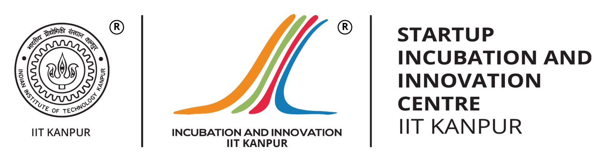

Work Experience
Nov 2024 – Ongoing
- An AI powered B2B company providing verified creator data and solutions through APIs and SaaS product offerings.
- Owned and built Social Screening, a SaaS product, achieving $250K+ ARR and automating influencer background verification.
- Delivered modular white label product versions for enterprise clients, driving $150K+ ARR and 35% faster onboarding.
- Authored technical PRDs detailing API specifications, scalability plans, and integration flows, reducing engineering rework by 25%.
- Leveraged Gemini Vertex to develop an in house AI model for automated content screening, reducing false positives by 15%.
- Designed RESTful APIs with clear contracts, robust error handling, and scalable versioning, improving integration success by 30%.
- Developed an API powered admin dashboard that automated workflows and delivered 70% higher efficiency for more than 20 operations users.
- Aggregated data from multiple vendors to develop Social Data APIs and managed seamless multi platform integrations.
- Built internal billing and usage dashboards using SQL for the finance team and leveraged Mixpanel insights to optimize product features.
- Collaborated closely with engineering, QA, and support teams to ensure smooth onboarding and strong post integration client success.
May 2023 – Nov 2024 · 19 months
- Management consulting firm with a self built SaaS product that evolved from a B2C tool into a B2B dashboard wireframing platform.
- Founding Product Manager at Mokkup.ai, leading MVP launch and iterative product improvements with a strong focus on growth.
- Authored technical PRDs and wireframes using insights from more than 150 user conversations, enabling structured and user driven development.
- Scaled the product to over 75,000 users across 160+ countries and onboarded 800+ paid customers within 20 months through organic and targeted channels.
- Grew MRR to more than $13K through direct subscriptions and enterprise deals, supported by strong customer success initiatives.
- Collaborated with a 12 member cross functional team across technology, design, and content to ensure agile and reliable feature delivery.
- Increased signups by 60% CAGR and reduced ad spend by 50% using insights from GA4, SQL, Power BI, and data driven experimentation.
- Delivered collaboration capabilities, real time commenting, multi factor authentication, Teams plan, and custom workspace using AWS powered infrastructure.
- Earned Best Ease of Use, Best Value on Capterra, Product of the Day on Product Hunt, and IIT Startup Cohort recognition.
July 2019 - July 2021 · 25 months
- Performed in-depth marketing and sales data analysis using SQL and Power BI, focusing on employee productivity metrics.
- Increased premium product market share from 11% to 27% through market penetration and development strategies.
- Partnered with sales teams, appointed channel partners and utilized Power BI dashboards to boost sales volume by 43%.
- Mentored 50+ Marketing Technical Services employees as a Technical Coach-Marketing, driving training and development.
- Applied data-driven approach to drive growth through Market Storming and BTL strategies in underdeveloped territories.
Internship Experiences
Tiger Analytics – Analytics Consulting Intern
May 2022 - June 2022 · 2 months
- Analyzed data of an E-Commerce company and applied “RFM (Recency, Frequency, and Monetary) Analysis” using Python.
- Leveraged Power BI and SQL for data analysis (EDA and RCA) to optimize product launches, promotions & discounts.
- Research on “AI and ML regulations” across EU and Canada along with their impact and implementation in industries.

Startup Incubation and Innovation Centre - FIRST - IIT Kanpur – Marketing Consulting Intern
Dec 2021 - Jan 2022 · 1 month
- Worked at headquarters of Chhattisgarh Minor Forest Produce Federation, Raipur for their Fast-Moving Consumer Goods.
- Documented root causes of problems, analyzed existing data using SQL and Power BI and proposed solutions for them.
- Provided insights in product and brand performance, competitor analysis and dashboarding of Chhattisgarh Herbals’ products.